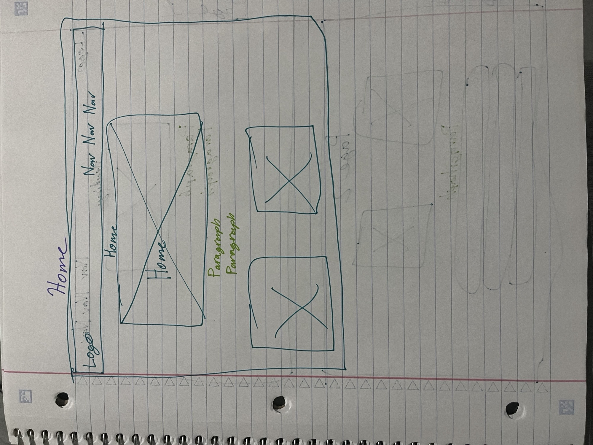
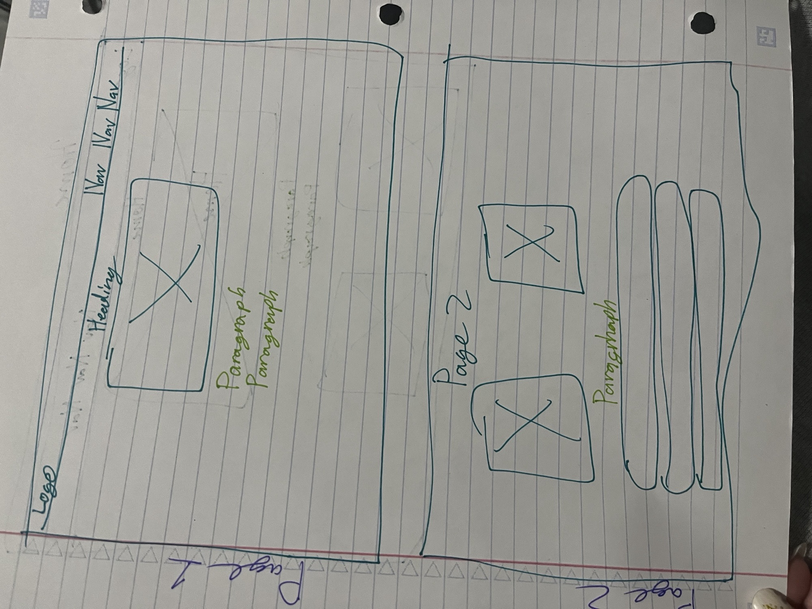

Overview
Purpose
PT Pathway Tracker is designed to help physical therapy patients confidently continue their recovery at home. The site provides clear exercise instructions, supportive visuals, and simple tracking tools so users can stay consistent, avoid common mistakes, and understand the purpose behind each movement.
Audience
The primary audience includes individuals recovering from injury, surgery, or chronic pain who have been given exercises by a physical therapist. Secondary audiences include caregivers, student athletes, and anyone seeking safe, guided movement to support healing.
Visitor Goals
Visitors come to the site looking for:
- Clear, step-by-step exercise instructions
- Visual demonstrations that match what their therapist taught
- Recovery tips, pacing guidance, and safety reminders
- Simple ways to track progress and stay motivated
Why This Site
This site stands out because it combines clarity, encouragement, and structure. Each exercise includes purpose, steps, cues, modifications, and recommended reps. The Recovery page supports users with lifestyle tips and progress tracking tools. The tone is warm, empowering, and easy to understand.
Branding
Website Logo
The logo uses the same illustration style as the site’s icons—clean, friendly, and supportive. It incorporates a house, heart, arrow, clipboard, and stopwatch to represent home recovery, progress, and guidance.
Style Guide
Color Palette
These colors match the icons and overall brand identity.
| Primary | Secondary | Accent 1 | Accent 2 | Dark | Light |
|---|---|---|---|---|---|
| #2A7F62 | #F2F7F5 | #E8B44C | #A0C4C7 | #1F1F1F | #FFFFFF |
Typography
Heading Font: Poppins — modern, friendly, and easy to read.
Paragraph Font: Open Sans — clean and accessible for long text.
Navigation
Site Map
Content
Home Page
The home page welcomes users, explains the purpose of the site, and directs them to the two main sections: Exercises and Recovery. It features a hero image, a brief introduction, and three feature cards that highlight learning exercises, tracking progress, and staying encouraged.
Exercises Page
This page organizes exercises by body region and provides step-by-step instructions, purpose, cues, reps, and modifications. Each exercise includes a matching icon and clear visuals.
Example Exercise: Glute Bridge — strengthens glutes and improves pelvic stability. Lift hips, hold, lower with control. 2–3 sets of 10–15 reps.
Recovery Page
The Recovery page offers pacing guidance, pain vs. harm explanations, sleep and hydration tips, and when to contact a provider. It also includes printable progress logs and tracking tools.
Tracking Page
This page allows users to log their daily exercises, pain levels, and progress. It includes a simple form and visual progress charts to keep users motivated.
Wireframes
Home

Exercises
